Lancer product · updated 2026-07-07
Single-page view of scope, engineering gates, and wireframe targets.
Production UI is the Cursor shell (Home / Workspaces / Settings) — not the legacy sidebar.
Wave 2 + Wave 3 (workspace detail, repo-first grouping, relay bulk-clear, UITest coverage) landed on
origin/master Jul 6–7. Evidence below now spans Jul-6/7 UITests; mock vs live is labeled on every screenshot.
Prove the live Cursor shell end-to-end against real lancerd:
pair → dispatch → approval → continue. Freeze Away Launch Composer, Proof Suite, Git/PR ship actions, and further IA redesign until this passes on a physical device.
LANCER_CURSOR_SHELL_LIVE=1) — nav-teardown bug fixed 07-07cursor/user-ready-tier0-9aec, draft) and the Wave 2/3 stream now merged to origin/master
both independently extended CursorShellLiveBridge — one added an "All Repos" grouped-thread aggregate,
the other added multi-host RunTarget/hostID support. Neither existed at their common ancestor,
so reconciling PR #27 is a real hand-merge of the core bridge class (source + 2 test files + 1 shell script), not a
mechanical rebase. Not yet done.
| Step | Status | Evidence |
|---|---|---|
| Pair from live shell | Partial live | CursorShellLiveBridge → E2ERelayPairingView |
| Dispatch prompt | Partial live | Live performDispatch callback |
| Approval → decide() | Partial live | InboxViewModel + bridge; biometric on branch |
| Follow-up / continue | Partial live | performContinueConversation |
| Relay E2E harness | PASS | tier-0-live-cursor-shell-proof |
| Owner device proof | Owner-gated | LIVE_LOOP_RUNBOOK |
Aligned with FEATURE_BACKLOG.md and master plan §2–§6.
Live governed loop on Cursor shell. Relay harness PASS; physical device + APNs lock-screen still open.
Mock + partial-live UI: Workspaces → thread → work thread, composer chain, review sheet, search, profile/settings. 21/21 exhaustive UITests on mock; live approval test PASS.
Launch contract, attachments, Away setup, Question Cards, Proof Suite/Reel, Git/PR actions, Away Digest home — wireframed; build after Tier 0.
Cross-vendor second-agent review first, then time-travel scrubber, Siri question cards, compliance export, terminal escape hatch.
Home · Workspaces · Settings. Inbox folds into Home (Away Digest). Governance folds into Settings. Legacy sidebar / Command Home is deprecated.
| Feature | Status | Wireframe | Notes |
|---|---|---|---|
| E2E relay pairing | Partial live | 01-onboarding | Live bridge to pairing sheet |
| Workspaces / thread hydration | Partial live | 03-workspaces | ChatConversationRepository |
| Composer → dispatch | Partial live | 04-launch-setup | Expanded live composer verified |
| Approval → decide() | Partial live | 06-review-diff | Live approval banner test PASS |
| Follow-up / continue | Partial live | 05-work-thread | Collapsed follow-up composer |
| Settings handoff | Live (legacy UI) | 10-settings | Opens SettingsWithLibraryView — Cursor-native settings not built yet |
| Relay E2E harness | PASS | — | Through live Cursor nav |
| Physical device loop | Open | — | Owner-gated |
| Feature | Status | Wireframe | UITest evidence |
|---|---|---|---|
| Onboarding (5 steps) | Mock + tests | 01-onboarding | 4 tests |
| Workspaces → thread → work thread | Mock + partial live | 03, 05 | 8 tests |
| Approval review sheet | Mock + live | 06-review-diff | 4 mock + live approve |
| PR detail + inline diff | Mock | 06-review-diff | 1 test |
| Search overlay | Mock | 08-ship-history | 1 test |
| Profile drawer + settings | Mock + live handoff | 10-settings | 3 tests |
| Composer chain (run-on, model) | Mock | 04-launch-setup | 2 tests (flake on sim, fix landed) |
| Connection health ladder | Shipped on 2 diverged branches | 03-workspaces | Orca borrow — needs reconciliation |
| Approval banner above composer | Shipped, live-gated | 05-work-thread | T3 pattern — race-condition fixed |
| 3-root IA (no legacy sidebar) | Verified | MASTER-REPORT | LegacyUIRemovalTests PASS |
| Workspace detail sheet (run targets) | Shipped | 03-workspaces | UITest lane added |
| Repo-first "All Repos" thread grouping | Shipped (T1-5) | 03-workspaces | Section headers by repo |
| Relay: bulk-clear invalid pairings | Shipped | 10-settings | Settings destination |
Do not build until Tier 0 proven. Highlights from backlog §2 — full list in FEATURE_BACKLOG.md.
| Feature | Status | Wireframe |
|---|---|---|
| Governance (policy + audit) | Shipped | 10-settings |
| Settings (native grouped list) | Shipped | 10-settings |
| Onboarding / pairing | Shipped + mock shell | 01-onboarding |
| LancerMac thin companion | Shipped | — |
| Away Launch Composer + contract | Not started | 04-launch-setup |
| Question Cards + ladder | Wireframed | 05-work-thread |
| Proof Suite / Reel / visual diff | Mock / wireframed | 05-work-thread |
| Away Digest as Home | Partial | 02-home |
| Git / PR / merge actions | Mock only | 08-ship-history |
| Mobile attachments + share intake | Wireframed | 04-launch-setup |
| Feature | Status | Wireframe |
|---|---|---|
| Cross-Vendor Second-Agent Review | Wireframed | 07-fast-follows |
| Time-Travel Scrubber | Approved design | 07-fast-follows |
| Siri / View Annotations question cards | Wireframed | 07-fast-follows |
| Terminal / SSH escape hatch | Built, hidden | — |
| Compliance export | Team-tier | prototype |
From docs/test-runs/user-ready-tier0-2026-07-06/ (21/21 CursorAppShellExhaustiveTests)
and docs/test-runs/composer-verify-2026-07-06/. No legacy sidebar captures.
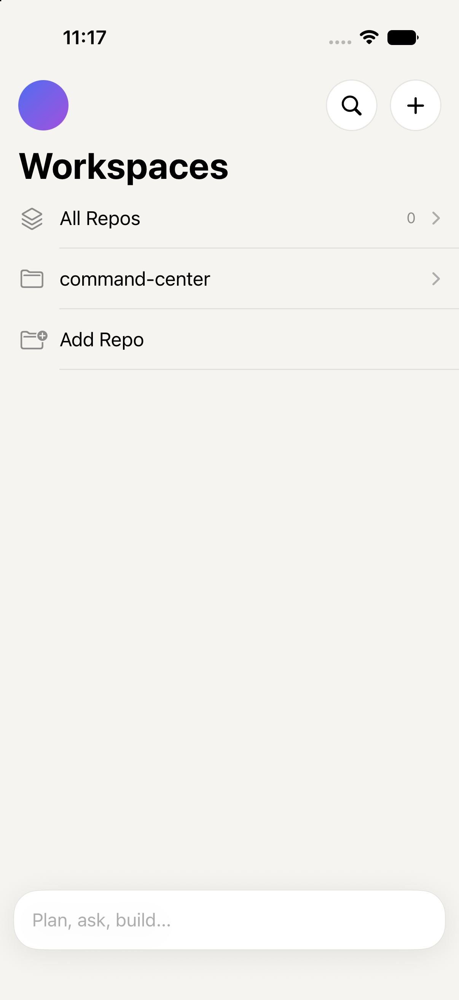
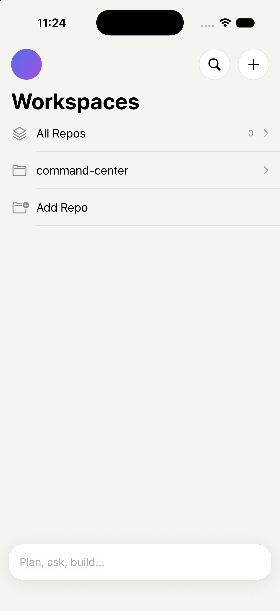
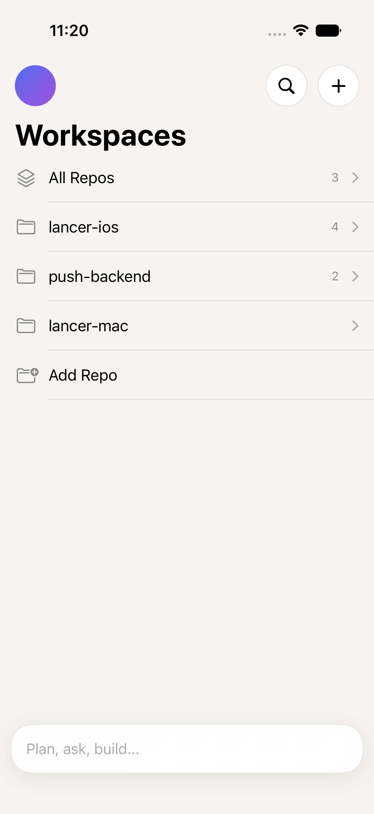
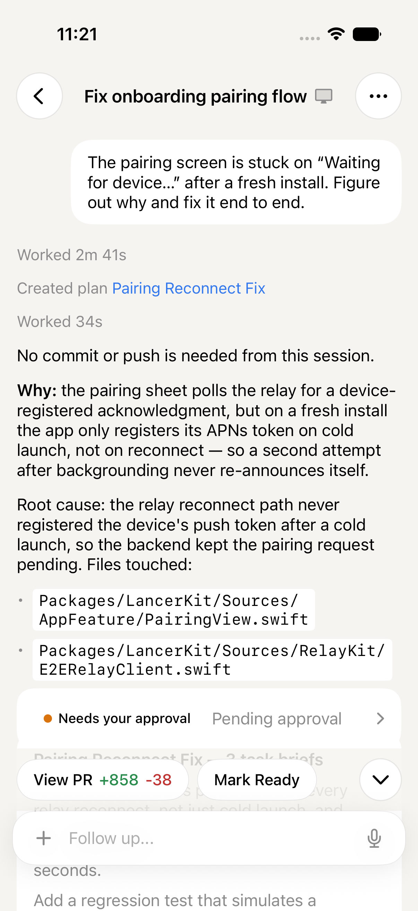
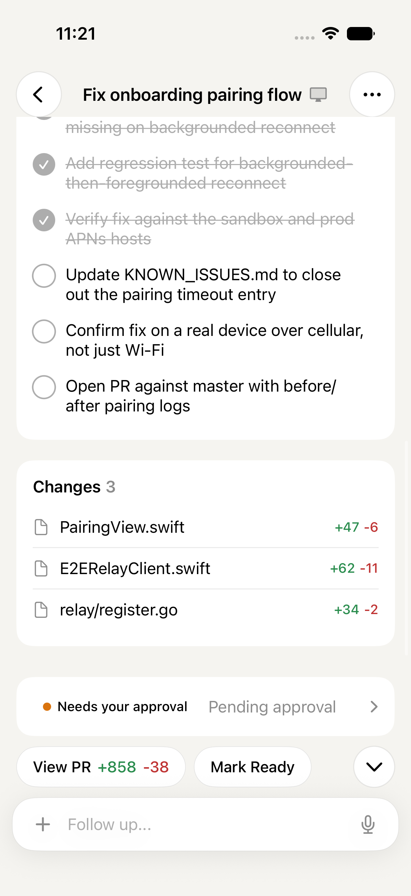
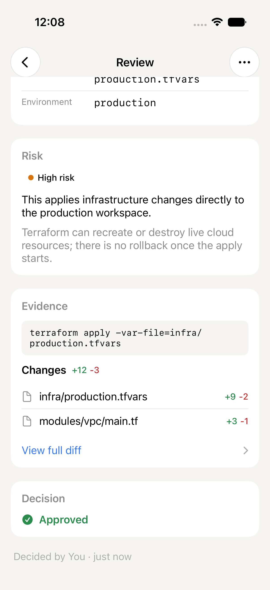
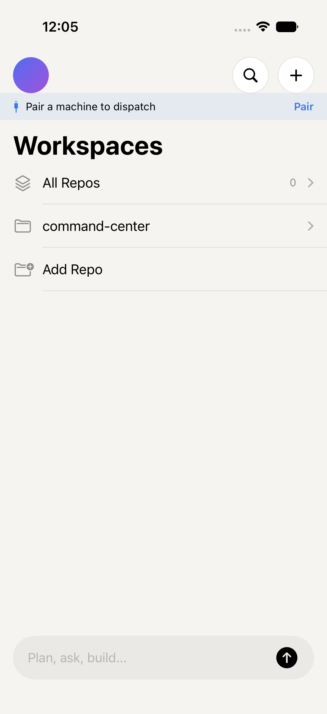
LANCER_CURSOR_SHELL_LIVE=1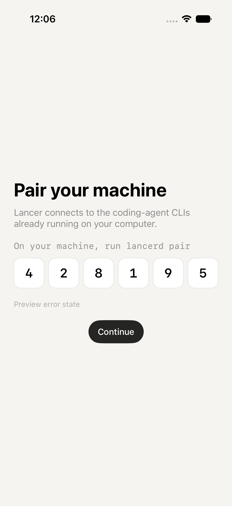
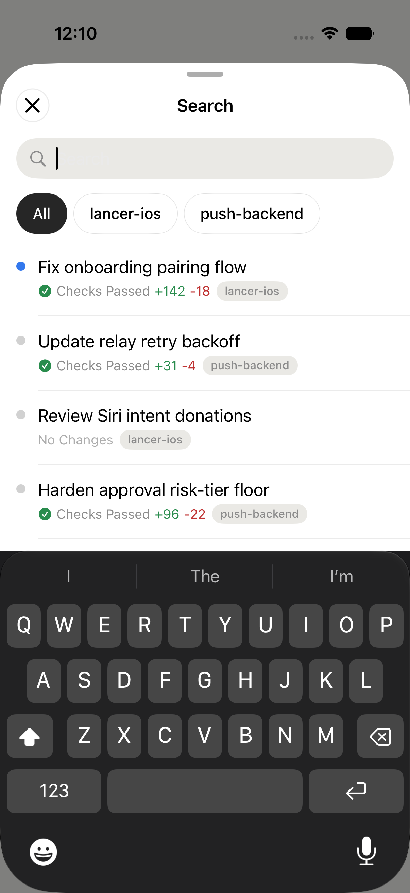
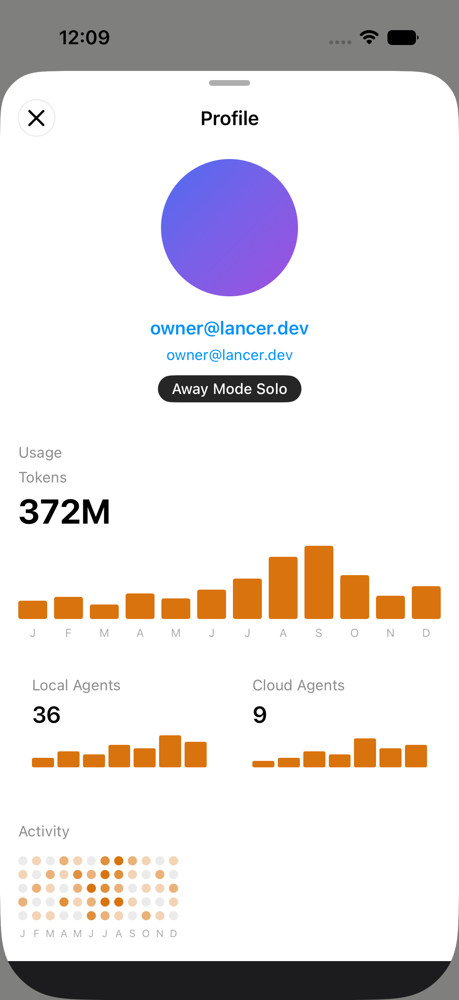
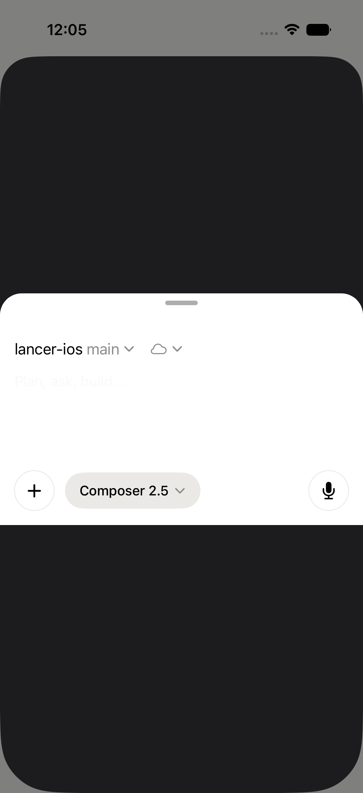
HTML artifacts — open in browser. Implementation may lag wireframes until Tier 0 + V1 slices land.